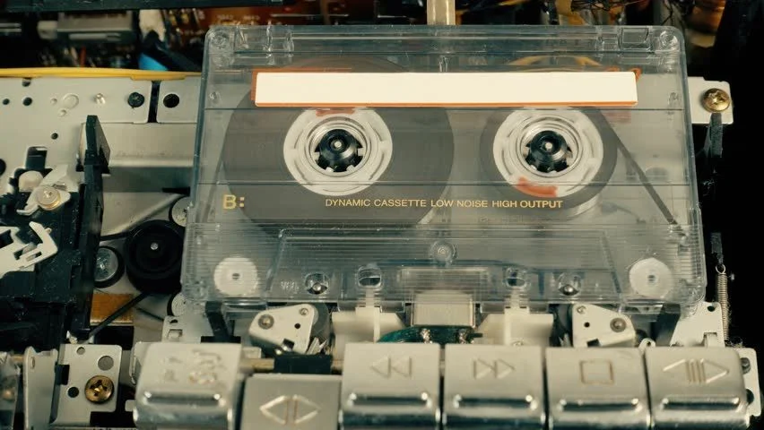

A digitális hangrögzítést megelőzően hatalmas népszerűségnek örvendett a mágneses hangrögzítés, amelynek alapjait már 1900-ban szabadalmaztatta Valdemar Poulsen. A technológia hatalmas fejlődésen ment keresztül, míg a '80-as évekre általánossá váltak a kompakt kazetták és a magnetofonok (divatos nevükön magnók) használata.
Nézzük meg, hogyan is működtek ezek az eszközök!
Az alábbi ábrán egy magnókazetta és a lejátszásához szükséges magnetofon mechanikája látható.
A honlapot Szabó Tamás készítette 2025-ben
© Minden jog fenntartva!